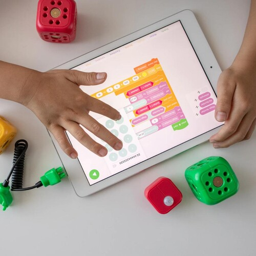

#364: So, What Is Learning Anyway?
Saturday, February 27th 2021, 7:52:49 pm
Available as mp3 audio and narrated by the author.
Let us define some things up front:
Teaching, or being taught, is when someone else is trying to make you learn.
Learning, is when you your self reach out for knowledge.
Studying, means looking at something up close.
Studying for an exam, is code for memorization.
Memorization in context of standardized education,
is gaining a temporary ability to mindlessly recall some facts for a matching test.
Before I learned English I memorized the opening speech in Star Trek TNG,
and the theme song to Cheers.
The way I did this was to write down the sounds I heard in the speech,
in my own native language like this:
"Dis ar de vojadzes ov startrek enterprys",
I knew what the speech was about, but I wasn't able to match up the words quite yet.
At 16 or so, I wouldn't know how to write it down,
in away that I could get it right.
What ultimately helped me learn English was cartoons and closed captions,
and above all moving to America, I had a reason, I had a want, I had a passion for English.
The only thing that didn't help me learn English was Shakespeare,
which I tried to read because everyone said it was English.
Though I struggled with the Balcony Scene in Romeo and Juliet,
I also fell in love with it.
I memorized a lot of quotes from the back of the book,
they just roll of my tongue to this day.
Learning, requires that you have a need to learn something,
Memorizing, has nothing to do with learning, it is all about acting.
Yes, I am able to recite the speech from Star Trek in real English,
even though I learned it as babble and gibberish, but that is the most horrible way to learn to recite something from memory, it is a joke.
To learn something, means to have enough connecting fiber to know it without mnemonics or tricks,
to learn something requires the involvement of a kind of love.
A good example of that kind of love is coming to country that you always wanted to live in,
and absorbing things, you don't memorize, memorization is thin, hollow, temporary, easily damaged or warped.
I never sat down to memorize English words,
I just had this massive overwhelming urge to understand what the Ninja Turtles were talking about.
I wanted to be in on their jokes, once I learned to separate what I was hearing into words,
which is just a function of becoming familiar with the language.
I found the words most frequently used were indicative of structure,
and the meaning was found in the context.
Context is something you get out of what has been happening in the cartoon,
where you think the cartoon is going, where it usually goes, what characters usually do, and what you understood thus far.
I only recently learned that the opening intro says "heroes in a half shell",
I always heard it as "hap shell" (H.A.P.) and because I wasn't used to hearing that elsewhere, I assumed the word is just mangled.
(I was familiar with word half and shell back when watching the cartoons, but I still think half shell is a pretty odd way of describing something dome shaped.)
It was a big deal for me to find something from Ninja Turtles,
in Inspector Gadget, and The DJ Kat Show.
For those of you who think it is crazy or silly to learn from cartoons,
take a look at one of the better alternatives: Follow Me - Beginner, Part 1
I won't mention text books here,
as they aren't useful at all, six months of closed captions is all it takes to get to story books.
To end this note, I wanted to mention Audio Books,
at a certain point, sooner than later, books like Top 100 Poems, and anything by Bill Bryson, take care of the rest.
So as long as the person is learning at their own pace everything will work out,
but to force someone to learn faster, is very cruel, and may put an end to that person's delicate curiosities.
Making them feel stupid for learning at their own pace by grading them down,
will probably cause great and long lasting harm to their self esteem and interests.
Forcing children to learn within time constraints,
and punishing them for failure, will only force them into temporary memorization as a way of protecting themselves.
Unethical schools will exploit that to their advantage,
they will keep the kids stressed out and purposefully force them into meaningless memorization so that everyone gets paid.
There is a concept of a Elaborative Rehearsal that somewhat shines some light on this cruelty,
when contrasted with the notion of a Maintenance Rehearsal.
But even Elaborative Rehearsal does not come close what it means to Actually Really Learn,
a person can only learn or as we should call it soak up, inhale, integrate new knowledge, when they are moving along a path that is of great interest to them.
That means, people can only really learn what they are interested in,
and will not learn if they are taught in segments by teachers.
It is difficult to believe that schools do not work,
it maybe impossible for many to believe they are an insult to the younger generations.
To make headway in this discussion, we must resist speaking in the bare abstract terms,
we must only speak in terms of specific subjects (like Math), or areas like (Science), and focus on reproducible results.
A child that learns mathematics for real will end up creating computer game engines,
visualization frameworks, computer games, generative graphics, and even generative music.
A child that is taught mathematics, will only learn to recall few of the most popular formulas,
later on in life, in a discussion about learning math, they will be ashamed of having only memorized formulas (in the goodness of their hearts they will still not blame schools).
This interest in making formulas come to life, with computers can be short lived,
in which case the person is likely to take to electronics, programming machines to take their art outside.
Mathematics as it is taught in school, will be disabling to most students,
and the result of that is they they will not look into programming, they won't want to take their art outside, and a whole world will be denied to them.
this has been going on for so long, that we can only be speechless...

Available as mp3 audio and narrated by the author.
References
- 1. Balcony Scene (www.youtube.com)
- 2. Ninja Turtles (www.youtube.com)
- 3. Inspector Gadget (www.youtube.com)
- 4. The DJ Kat Show (www.youtube.com)
- 5. Follow Me, the tougher way of learning English (www.youtube.com)
- 6. Elaborative Rehearsal (www.youtube.com)
- 7. schools do not work (www.youtube.com)
- 8. programming machines to take their art outside (www.youtube.com)
- 9. math taught in school is cutting people off from a whole world of sweet curiosities (www.youtube.com)